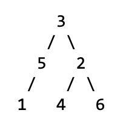
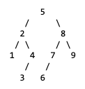
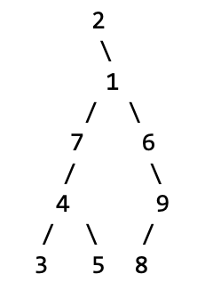

This week’s section exercises are all about trees, particularly binary search trees and common tree idioms and algorithms. Trees are yet another way to organize the way that data is stored, and they are perhaps one of the most powerful paradigms for data storage that we've encountered so far! Their recursive structure makes writing recursive functions very natural, so we will be using lots of recursion when working with trees. After you're done working through this section handout, you'll truly know what it means to party with trees!
Remember that every week we will also be releasing a Qt Creator project containing starter code and testing infrastructure for that week's section problems. When a problem name is followed by the name of a .cpp file, that means you can practice writing the code for that problem in the named file of the Qt Creator project. Here is the zip of the section starter code:
For all the problems in this handout, assume the following structures have been declared:
struct TreeNode {
int data;
TreeNode *left;
TreeNode *right;
// default constructor does not initialize
TreeNode() {}
// 3-arg constructor sets fields from arguments
TreeNode(int d, TreeNode* l, TreeNode* r) {
data = d;
left = l;
right = r;
}
};
You can also assume the following utility functions have been defined as well:
// takes in the pointer to a tree and frees all
// the memory associated with that tree.
void freeTree(TreeNode *node) {
if (node == nullptr) return;
freeTree(node->left);
freeTree(node->right);
delete node;
}
1) No, You're Out of Order!
Write the elements of each tree below in the order they would be seen by a pre-order, in-order, and post-order traversal.
a) 
b) 
c) 
a.
pre-order: 3 5 1 2 4 6
in-order: 1 5 3 4 2 6
post-order: 1 5 4 6 2 3
b.
pre-order: 5 2 1 4 3 8 7 6 9
in-order: 1 2 3 4 5 6 7 8 9
post-order: 1 3 4 2 6 7 9 8 5
c.
pre-order: 2 1 7 4 3 5 6 9 8
in-order: 2 3 4 5 7 1 6 8 9
post-order: 3 5 4 7 8 9 6 1 2
2) Count Left Nodes (countleft.cpp)
Write a function
int countLeftNodes(TreeNode *node)
that takes in the root of a tree of integers and returns the number of left children in the tree. A left child is a node that appears as the root of a left-hand subtree of another node. For example, the tree in problem 1(a) has 3 left children (the nodes containing 5, 1, and 4).
int countLeftNodes(TreeNode *node) {
if (node == nullptr) {
return 0;
} else if (node->left == nullptr) {
return countLeftNodes(node->right);
} else {
return 1 + countLeftNodes(node->left) + countLeftNodes(node->right);
}
}
3) Find Your True Balance (balanced.cpp)
Write a function
bool isBalanced(TreeNode *node)
that takes in the root of a tree of integers and returns whether or not the tree is balanced. A tree is balanced if its left and right subtrees are balanced trees whose heights differ by at most 1. The empty tree is defined to be balanced. You can assume you already have a function that gives you the height of a tree. The signature for this function is:
int height(TreeNode* node);
![This image has 4 panels, showing 2 examples of balanced trees and 2 examples of trees that are not balanced. The first balanced tree has a root node that has a left subtree of height 1 (only 1 node) and then a right subtree of hieght 2 (complete binary tree of 3 nodes). The second balanced tree has a root node what has a left subtree of height 2 (2 nodes extendin in a straight line with no branching) and a right subtree of height 1 (just a single node). The first example of a tree that is not balanced has a left subtree of height 2 (3 nodes with aranged as complete binary subtree) and no right subtree (hieght of 0 since there are no nodes in it). The second example of a tree that is not balanced is one in which the root node has left and right subtrees with heights 2 and 3 respectively. However, the right subtree of the root is not itself balanced, as it has no left subtree but has a right subtree of height 2.](img/balanced.png)
Using the height() function provided:
bool isBalanced(TreeNode *node) {
/* From the problem statement, an empty tree is balanced */
if (node == nullptr) {
return true;
} else {
/* From the problem statement, "a tree is balanced if its left and right subtrees are balanced trees whose heights differ by at most 1". The key thing to note is that this is taken right from the problem statement! (even if you didn't understand the question well, we tell you the formula to find whether a tree is balanced or not!) */
return isBalanced(node->left) && isBalanced(node->right) &&
abs(height(node->left) - height(node->right)) <= 1;
}
}
4) Give 'Em The Axe (prune.cpp)
Write a function
void removeLeaves(TreeNode*& node)
that accepts a reference to a pointer to a TreeNode and removes the leaf nodes from a tree. A leaf is a node that has empty left and right subtrees. If t is the tree on the left, removeLeaves(t) should remove the four leaves from the tree (the nodes with data 1, 4, 6, and 0). A second call would eliminate the two new leaves in the tree (the ones with data values 3 and 8). A third call would eliminate the one leaf with data value 9, and a fourth call would leave an empty tree because the previous tree was exactly one leaf node. If your function is called on an empty tree, it does not change the tree because there are no nodes of any kind (leaf or not). You must free the memory for any removed nodes.
![This image contains 5 panels, wach showing a tree at different stages of the leaf removal process. The first panel is titled "before call" and has the following tree contained: Root node 7, which has left child 3 and right child 9. Node 3 has left child 1 and right child 4, both of who are leaf nodes. Node 9 has left child 6 (which is a leaf node) and right child 8. node 8 has no left child and right child 0 (which is a leaf node). The second panel is titled "After 1st call" and contains a tree with the following description: Root node 7, which has left child 3 (which is now a leaf node) and right child 9. Node 9 has no left child and has right child 8 (which is a leaf node). The third panel is titles "After 2nd call" and contains a tree with the following description: root node 7 with no left child and rigth child 9, which is now a leaf node. The fourth panel is titled "after 3rd call" and a tree with the following description: Root node 7 with no children (only node in the tree). The fifth panel is titled "after 4th call" and solely has an empty tree represented by "nullptr".](img/pruning.png)
void removeLeaves(TreeNode*& node) {
if (node != nullptr) {
if (node->left == nullptr && node->right == nullptr) {
delete node;
node = nullptr; // you can do this since node is passed by reference!
} else {
removeLeaves(node->left);
removeLeaves(node->right);
}
}
}
5) Binary Tree Insertion
Draw the binary search tree that would result from inserting the following elements in the given order.
Here's the alphabet in case you need it! ABCDEFGHIJKLMNOPQRSTUVWXYZ
a. Jaques, Sunny, Klaus, Violet, Beatrice, Bertrand, Kit, Lemony
b. Leslie, Ron, Tom, Jerry, Larry, Garry, April, Andy
c. Aaron, Andrew, Chris, Colin, Jason, Leslie, Wesley
![This image contains pictures of three trees, labeled a b and c. Tree a has the following structure: Root node of "Jaques". "Jaques" has left child "Beatrice" and right child "Sunny". "Beatrice" has no left child and right child "Bertrand", which itself has no children (leaf node). "Sunny" has left child "Klaus" and right child "Violet". "Klaus" has left child "Kit" and right child "Lemony", both of whom are leaf nodes. "Violet" has no children and is also a leaf node. Tree b has the following structure: Root node of "Leslie". "Leslie" has left child "Jerry" and right child "Ron". "Jerry" jas left child "Garry" and right child "Larry" (who is a leaf node). "Garry" has left child "April" and no right child. "April" has left child "Andy" (who is a leaf node) and no right child. "Ron" has no left child and right child "Tom", who is a leaf node. Tree c has the following structure: Root node "Aaron". "Aaron" has no left child and right child "Andrew". "Andrew" has no left child and right child "Chirs". "Chris" has no left child and right child "Colin". "Colin" has no left child and right child "Jason". "Jason" has no left child and right child "Leslie". "Leslie" has no left child and right child "Wesley".](img/binaryinsert.png)